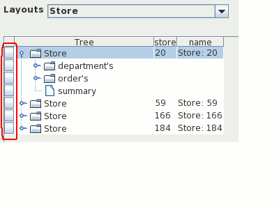
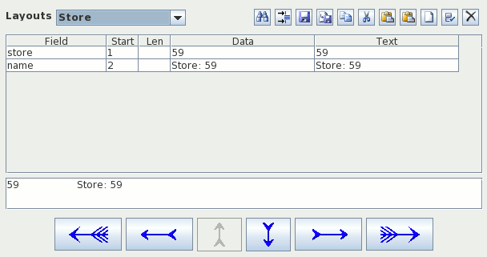
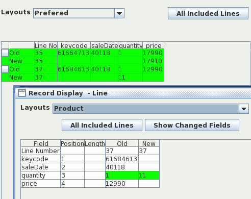

Avro Editor
Avro Editor
Avro Editor |
||||
|
Avro Editor |
||||
| Purpose | The Avro-Editor is a viewer / editor / compare Utility for Avro Binary message files. |
| Author | Bruce Martin |
| Requirements | Java 6 |
In the Editor, a Avro File is displayed as a Tree with each record displayed as a Node. You can update the fields or press the buttons on the Left for a detailed record View:

Individual records can also be displayed:

The package can also compare 2 Avro binary files and display the results on the screen or write the result as a HTML file:

There are several limitations to be aware of
Union {null, Record01} field1;
Union {null, float} field2;
are supported but the following are not supported
Union {float, double} field1;
Union {null, float, double} field2;
Union {float, record3} field3;
map<float> FloatMap;you must use the popup arrow.
| AvroEditor at SourceForge | Download Page | Forums |